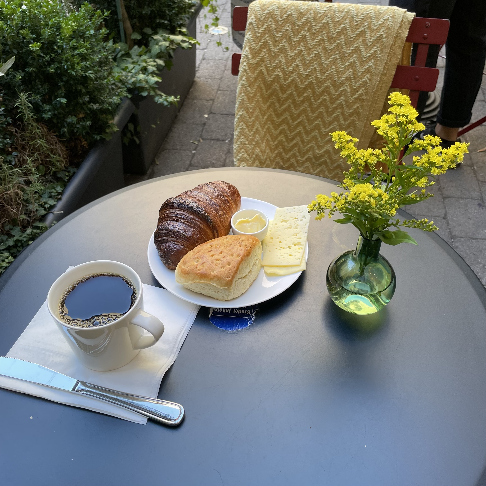

Anders Widebrant's Personal Homepage
Welcome to my homepage! There are many others like it, but this one's mine.
You can contact me at my firstname dot my last name klammeraffe gmail dot com.
Short Curriculum Vitae
2017 - present: Developing new RAN products for Ericsson. Working mainly on system design of the software and hardware on the border between baseband and radio processing.
2014 - 2017: Worked on various projects as a contractor with Tedkomp.
2008 - 2014: Developed IMS client software at Ericsson, mainly focusing on VoLTE.
2000 - 2002: Developed OSS software for Ericsson's fixed phone network products.
Education: Around two thirds of a computer engineering degree from KTH.
